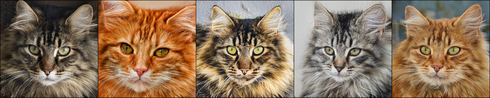
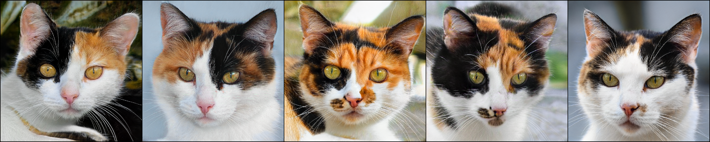
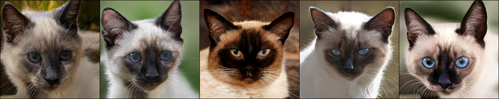
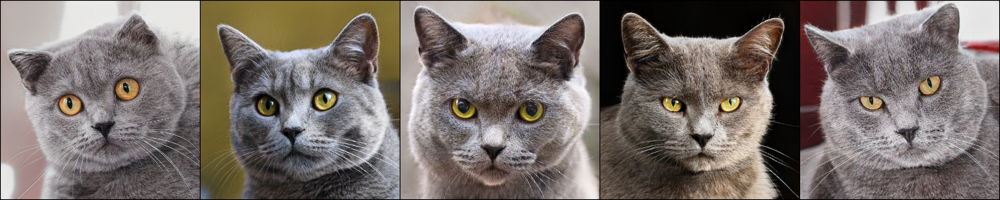
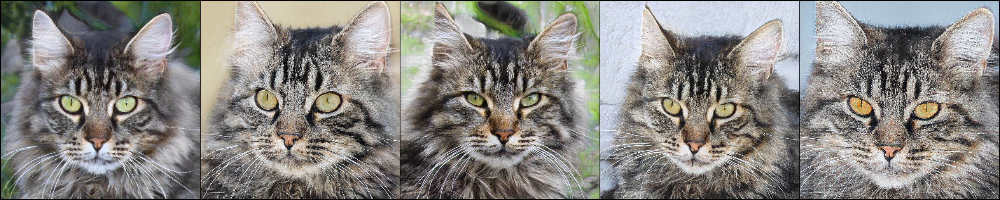
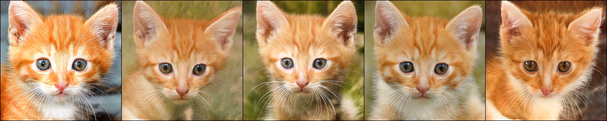
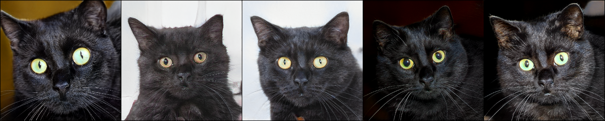
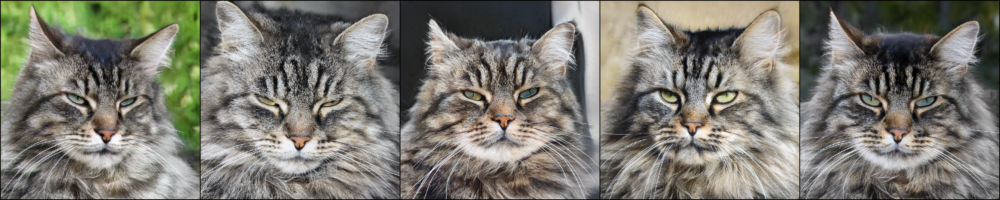

Controllable and Compositional Generation with Latent-Space Energy-Based Models
1NVIDIA
2Caltech
NeurIPS 2021
Abstract
Controllable generation is one of the key requirements for successful adoption of deep generative models in
real-world applications, but it still remains as a great challenge. In particular, the compositional
ability to generate novel concept combinations is out of reach for most current models. In this work, we use
energy-based models (EBMs) to handle compositional generation over a set of attributes. To make them
scalable to high-resolution image generation, we introduce an EBM in the latent space of a pre-trained
generative model such as StyleGAN. We propose a novel EBM formulation representing the joint distribution of
data and attributes together, and we show how sampling from it is formulated as solving an ordinary
differential equation (ODE). Given a pre-trained generator, all we need for controllable generation is to
train an attribute classifier. Sampling with ODEs is done efficiently in the latent space and is robust to
hyperparameters. Thus, our method is simple, fast to train, and efficient to sample. Experimental results
show that our method outperforms the state-of-the-art in both conditional sampling and sequential editing.
In compositional generation, our method excels at zero-shot generation of unseen attribute combinations.
Also, by composing energy functions with logical operators, this work is the first to achieve such
compositionality in generating photo-realistic images of resolution 1024x1024.
Controllable Generation on FFHQ [1]
In controllable generation on FFHQ, the image synthesis is controlled by the attribute code. As shown in
the
following, modifying each attribute corresponds to an effective and disentangled semantic change in
synthesized images. Note that the original image resolution is 1024x1024, and we have compressed the
gifs to some degree to save the memory. As a result, you may observe some artifacts caused by the gif
compression.

yaw (horizontal)

pitch (vertical)

smile

beard
Controllable Generation on MetFaces [2]
By directly applying the image classifier pre-trained on the FFHQ data to the painting faces data (i.e.,
MetFaces), we can also effectively control the generation of the painting faces data. It demonstrates
the good robustness of our proposed method to the classification noise and its generalization ability.

yaw (horizontal)

beard
Controllable Generation on AFHQ Cats [3]
In controllable generation on AFHQ Cats (512x512), the image synthesis is controlled by the attribute
code. As shown in the
following, the generated images are conditioned on either a single attribute or a combination of
multiple attributes.
Note that the original AFHQ Cats dataset does not contain the ground-truth attribute, and thus we have
used the CLIP [4]
to first annotate the generated images and then apply our method.

breed='maine coon cat'

breed='calico cat'

breed='siamese cat'

breed='british shorthair cat'

breed='maine coon cat', haircolor='grey'

haircolor='ginger', age='young'

breed='british shorthair cat', haircolor='black', mood='fearful'

breed='maine coon cat', haircolor='grey', mood='grumpy'
Citation
@inproceedings{nie2021controllable,
title={Controllable and compositional generation with latent-space energy-based models},
author={Nie, Weili and Vahdat, Arash and Anandkumar, Anima},
booktitle={Thirty-Fifth Conference on Neural Information Processing Systems},
year={2021}
}References
[1] T. Karras, S. Laine, and T. Aila, A style-based generator architecture for generative adversarial
networks. CVPR 2019.
[2] T. Karras, M. Aittala, J. Hellsten, S. Laine, J. Lehtinen, and T. Aila, Training generative adversarial
networks with limited data. NeurIPS 2021.
[3] Y. Choi and Y. Uh and J. Yoo and J.-W. Ha, StarGAN v2: Diverse Image Synthesis for Multiple Domains,
CVPR 2020.
[4] A. Radford, et. al, Learning Transferable Visual Models From Natural Language Supervision, ICML 2021.